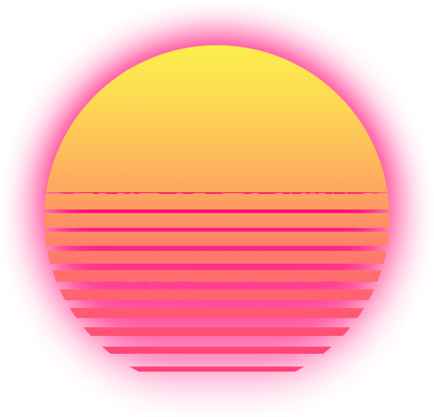
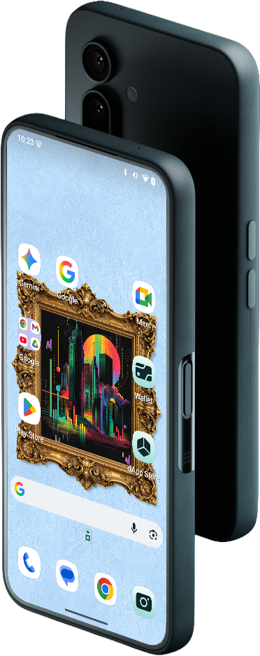

Flex your NFTs in all their glory — right on your phone's wallpaper & lock screen.
There's no good or easy way to display NFTs
on your wallpaper.

Just thought I'd stop to say hi. I figure I don't need to introduce myself.
Modern, native Android — no cross-platform compromises
Powers both the UI and the Live Wallpapers
Mobile Wallet Adapter, Multmult, DAS 2.0
Existing repo, but significant features built during the Hackathon
Major app features delivered — including the live wallpapers themselves